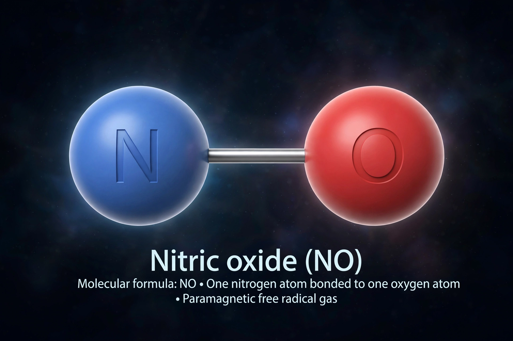

| Formula | NO |
|---|---|
| Molar mass | 30.01 g/mol |
| Appearance | Colourless gas |
| Boiling point | −152 °C |
| Other names | Nitrogen monoxide |
Nitric oxide (nitrogen oxide or nitrogen monoxide) is a colorless gas with the formula NO. It is one of the principal oxides of nitrogen. Nitric oxide is a free radical: it has an unpaired electron, and it is an important intermediate in industrial chemistry. It is also a crucial biological signalling molecule in animals, and a toxic air pollutant produced by engines and power plants.
NO is a diatomic molecule with a bond order of 2.5. In air it reacts rapidly with oxygen to give nitrogen dioxide (NO2), the brown gas associated with photochemical smog. Industrially, nitric oxide is made by the Ostwald process — catalytic oxidation of ammonia at around 850 °C over platinum-rhodium gauze — as the first step in manufacturing nitric acid. In the atmosphere, lightning produces NO from nitrogen and oxygen.
In the 1980s nitric oxide was identified as the endothelium-derived relaxing factor: released by the inner lining of blood vessels, it diffuses into smooth muscle and triggers vasodilation, regulating blood pressure. Robert Furchgott, Louis Ignarro and Ferid Murad received the 1998 Nobel Prize in Physiology or Medicine for this work. NO also functions as a neurotransmitter, a mediator of immune defence (macrophages generate it to kill pathogens), and in platelet regulation. It is synthesised from the amino acid L-arginine by nitric oxide synthase (NOS) enzymes.
Inhaled nitric oxide is used to treat persistent pulmonary hypertension of the newborn and selected cases of acute respiratory distress, dilating the pulmonary vasculature. The drug sildenafil (Viagra) works by potentiating the NO signalling pathway. Nitroglycerin, used for angina since the 19th century, acts by releasing NO.
Together with NO2 (collectively NOx), nitric oxide from combustion contributes to acid rain and ground-level ozone, and is therefore controlled by catalytic converters and emission standards. In the stratosphere, NO participates in catalytic cycles that destroy ozone.
See also: Explosive · Nitrogen dioxide · Ostwald process